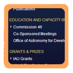

journal_seven(eris) {
The site I chose for Journal 7, the IAU, has a unique, but effective, visual hierarchy. I believe it conforms to many of Steve Krug's fundamental recommendations (as outlined in his book Don't Make Me Think) while taking some liberties with presentation.
}
'IAU's Purpose
Upon first glance, my eyes were led to the site title: "International Astronomical Union". While this told me that the site was about astronomy, I wasn't able to truly identify the purpose of the site. I then looked to the left and noticed the site ID which, to me, looked vaguely academic.
I then began scanning the primary navigation, which is unique in the fact that it is setup vertically along the left-hand-side rather than horizontally along the top. The navigation links cleared up most of my questions by presenting information such as "Scientific Dates & Deadlines", "Publications", "Grants", etc.
In the end, I am not truly convinced that the IAU website is successful in presenting its purpose at a glance, though.
Critique
The IAU website maintains persistent navigation throughout all of its pages. The site ID doubles as a link to the home page, but isn't very effective at presenting the site's purpose. There is no tagline (see "Potential Improvements" below), which probably contributes to this failure in communication. The IAU site does feature a search bar.
Each page features bread crumbs in the form of "Home >> Press & Media >> Press Releases >> IAU names dwarf planet Eris". Not only does this tell the user where they are, but each bread crumb doubles as a link to one of the previous "levels". This is perfect for the Krug trunk test.
The site is most effective in its use of primary navigation. As mentioned above, the primary navigation is vertically aligned and spans the entirety of the left-hand column. The links are short and very self-explanatory.

In general, the site follows Krug's rule to "omit words". The site features plenty of news articles but they appear to be targeted at a less academic audience. The articles are short, well-spaced, and easy to understand.
Potential Improvements
My first improvement would be to give the IAU website a tagline. Admittedly, the IAU website is primarily a research source and therefore is probably sought out by individuals in the sciences rather than stumbled upon by the average web user. That being said "International Astronomical Union" is not very self-evident and the content is definitely accessible to the average user (it doesn't feature intense scientific language). A tagline such as "The Source for Scientific Dates and Conferences" would go a long way towards establishing the site's purpose at a glance.
A second, less important improvement would be to redesign the site ID. Like the tagline, this would help users identify the site's purpose.